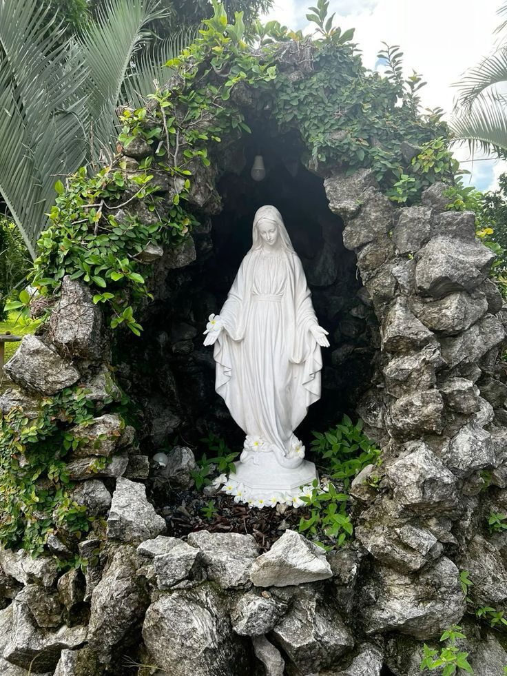
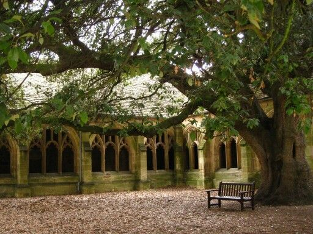
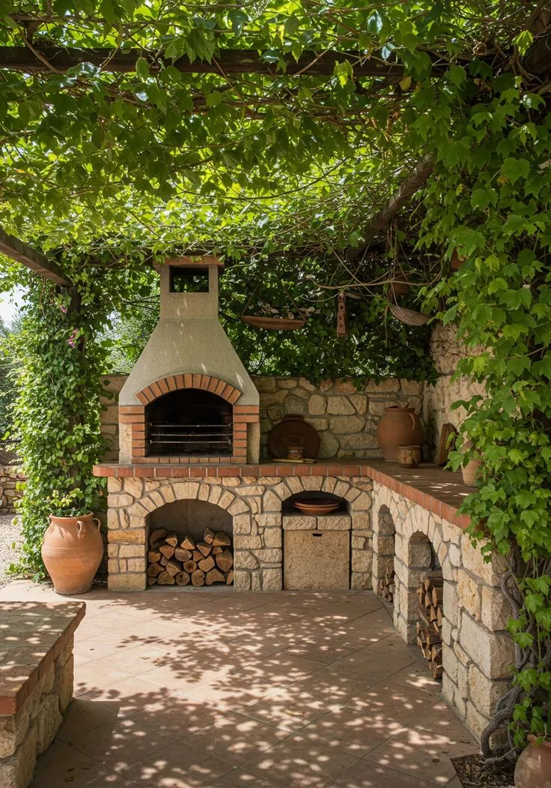
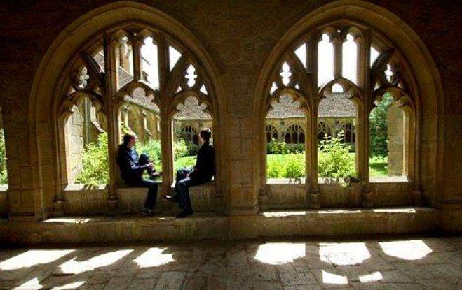

Santuario



 on X.jpg)

Benvenuti nel mio rifugio personale, uno spazio dove il tempo sembra fermarsi tra le note di una vecchia canzone e il profumo dei fiori freschi. Questo santuario italiano non è solo un luogo físico, ma un sentimento di pace profonda che porto nel cuore ogni giorno. Qui, ogni immagine racconta una storia di bellezza, di sogni sussurrati al vento e di quella magica luce che solo l'anima può percepire quando si sente veramente a casa.
In questo angolo di mondo, celebro la vita nelle sue sfumature più delicate. È un giardino segreto dove i ricordi si intrecciano con il presente, creando un'armonia perfetta tra l'estetica vintage e la freschezza della natura. Spero che camminando tra queste visioni tu possa trovare un momento di ispirazione, una scintilla di gioia o semplicemente un respiro di tranquillità in mezzo al caos della vita quotidiana. Grazie per aver visitato il mio piccolo paradiso personale.